한국 ETF 14종 포트폴리오를 PPO로 학습. Rolling-window(8 round) × multi-seed 평가. Reward는 Differential Sharpe Ratio (DSR), 라운드 간 best 모델 가중치를 인계.
정책 출력 logit $a \in \mathbb{R}^{14}$ 를 softmax로 단순x(simplex) 위에 사상한 뒤, 옵션으로 단일 자산 최대 비중 $w_{\max}$ 를 적용합니다.
--max-weight 0.3)이동 1·2차 모멘트 $(A_t, B_t)$ 를 EMA로 추적하면서, 매 스텝의 Sharpe ratio 미분량을 보상으로 사용합니다. PortfolioEnv 내부에서 $\eta = 1/252$ 로 갱신.
VecNormalize(reward) 가 학습 시 추가로 running $\mu,\sigma$ 정규화·클리핑을 적용 (norm_obs=False, clip_reward=10).
설정: $\gamma$, $\lambda$, clip $\epsilon$, $n_{\text{steps}}$, batch, $n_{\text{epochs}}$, ent_coef 는 config.ppo 사용.
매 eval_freq 스텝마다 val 환경에서 deterministic rollout을 돌려 DSR 합산을 비교, 최대값을 best로 저장합니다.
각 라운드는 Train 5년 / Val 1년 / Test 1년, 매년 1년씩 슬라이드. Val·Test에는 window(60일) 직전 컨텍스트를 prepend 해서 state 구성 보장.
round 1: train 2013-08~2017 | val 2018 | test 2019 round 2: train 2014 ~2018 | val 2019 | test 2020 round 3: train 2015 ~2019 | val 2020 | test 2021 round 4: train 2016 ~2020 | val 2021 | test 2022 round 5: train 2017 ~2021 | val 2022 | test 2023 round 6: train 2018 ~2022 | val 2023 | test 2024 round 7: train 2019 ~2023 | val 2024 | test 2025 round 8: train 2020 ~2024 | val 2025 | test 2026 (~04-03)
n-seeds=5
HMM + cap 0.3 --max-weight 0.3, 5 seeds 진행 중
no-HMM + cap 0.3 --no-hmm --max-weight 0.3, 5 seeds 진행 중
각 라운드 test 결과를 시계열로 이어붙여 산출한 backtest 지표.
summary_*.csv 와 동일한 수치.
| 전략 | Sharpe | Cumulative Return | MDD |
|---|---|---|---|
| Baseline PPO (HMM-on, no cap) — v2 | 1.0556 | +365.43% | -29.38% |
| Baseline PPO (HMM-on, no cap) — v1 | 1.0795 | +301.33% | -30.76% |
| HMM + cap 0.3 PPO (seed=1) | 1.1599 | +153.19% | -25.41% |
| no-HMM + cap 0.3 PPO (seed=1) | 0.9163 | +116.21% | -16.59% |
| KODEX200 (benchmark) | 0.7782 | +251.04% | -34.64% |
| Equal Weight (14 ETF) | 0.6435 | +112.19% | -34.45% |
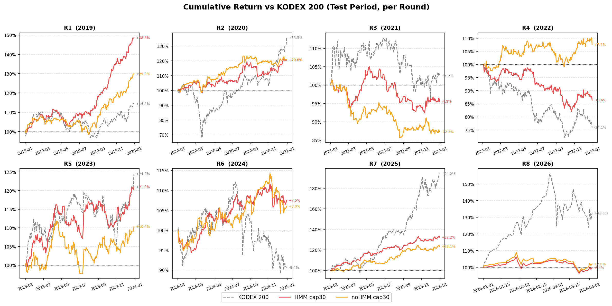
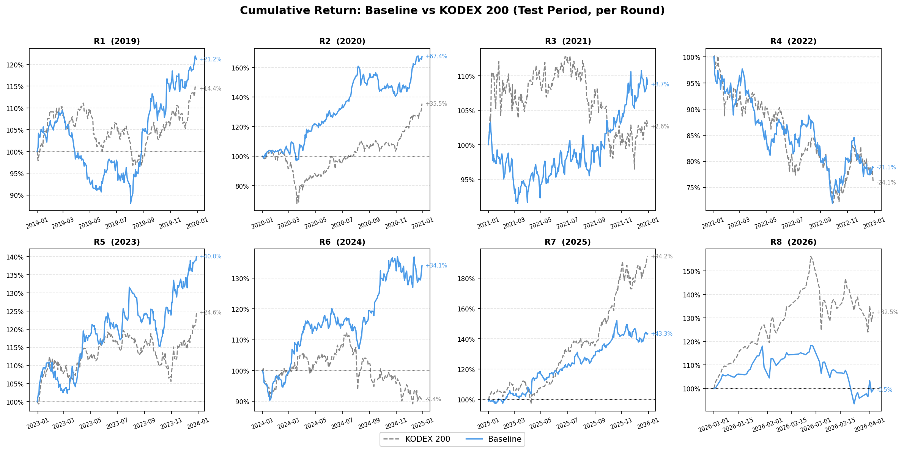
실행: python3 train.py --mode full |
결과: results/rolling_window_results.csv
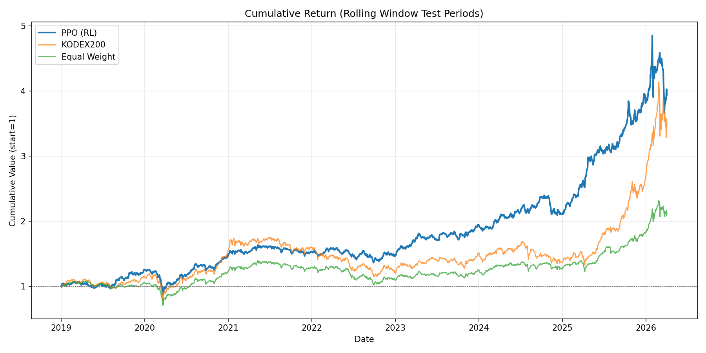
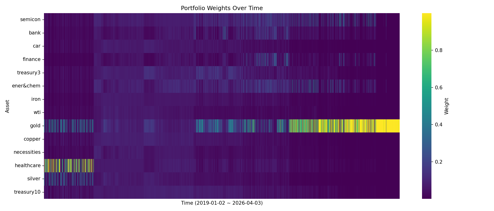
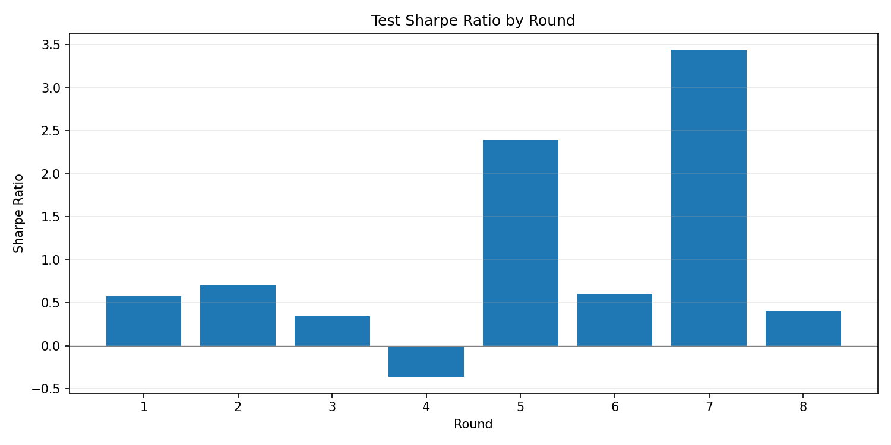
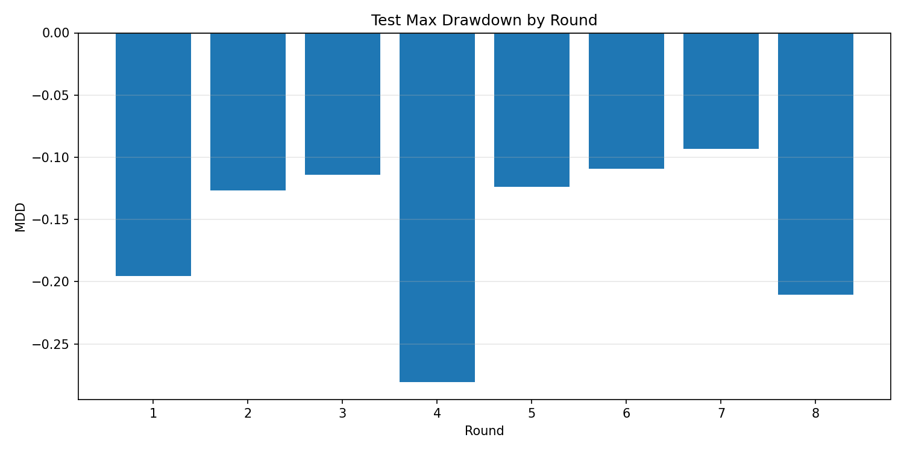
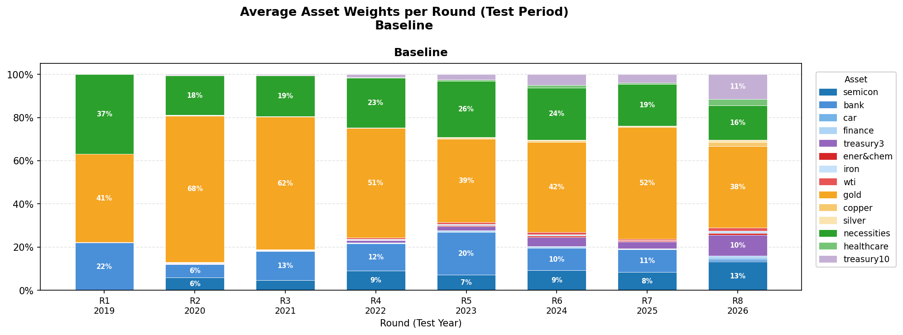
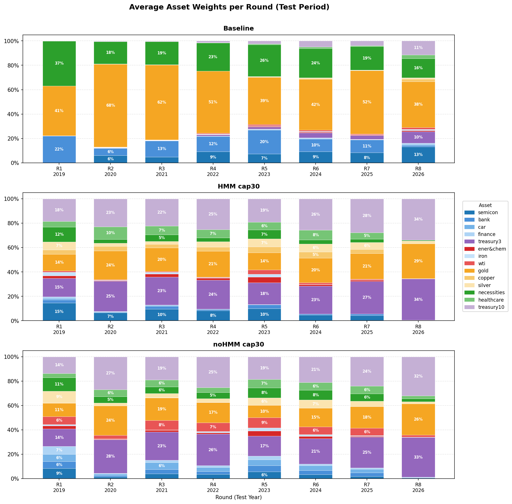
실행: python3 train.py --mode full --max-weight 0.3 |
결과: results/rolling_window_results_hmm_cap30.csv
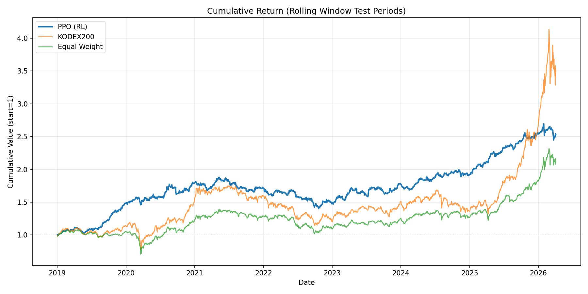
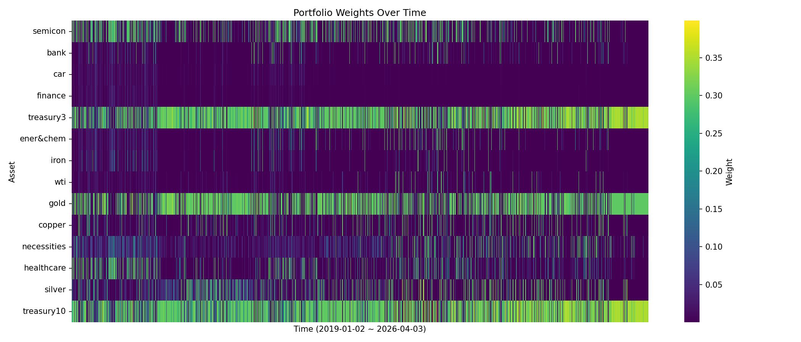
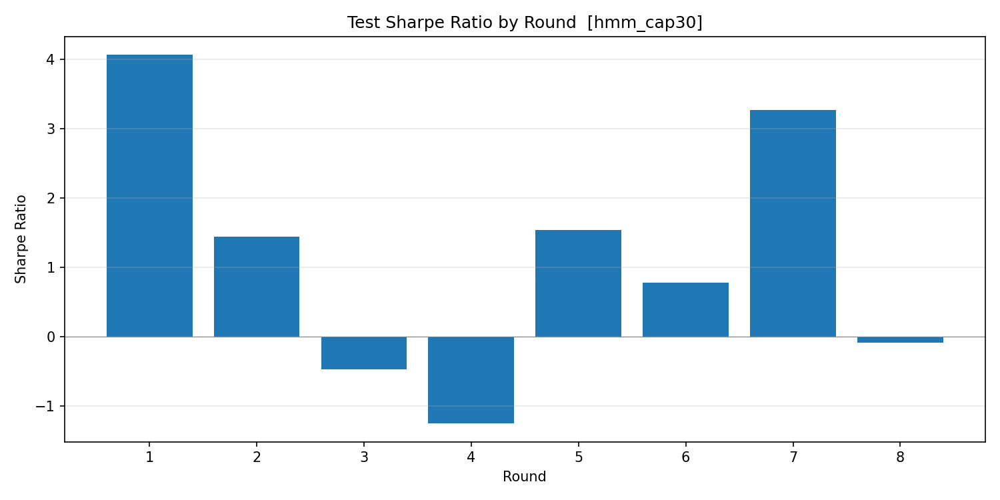
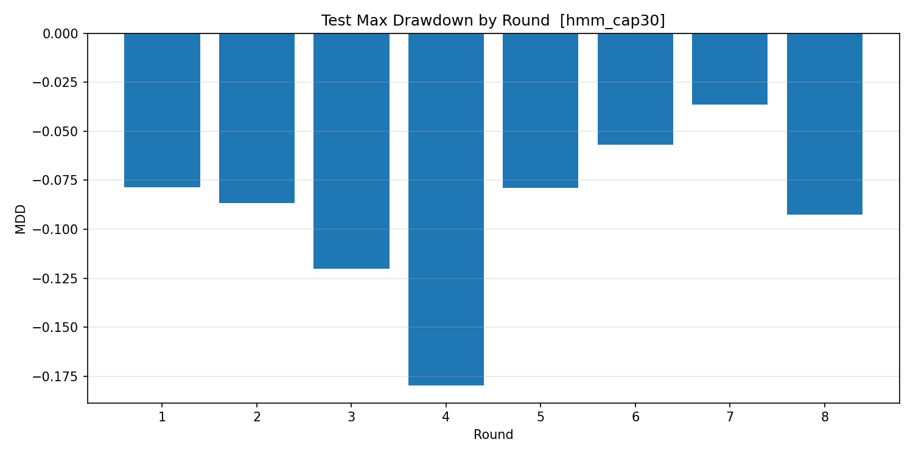
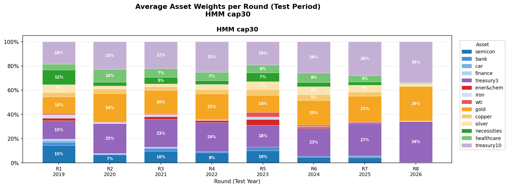
실행: python3 train.py --mode full --no-hmm --max-weight 0.3 |
결과: results/rolling_window_results_nohmm_cap30.csv
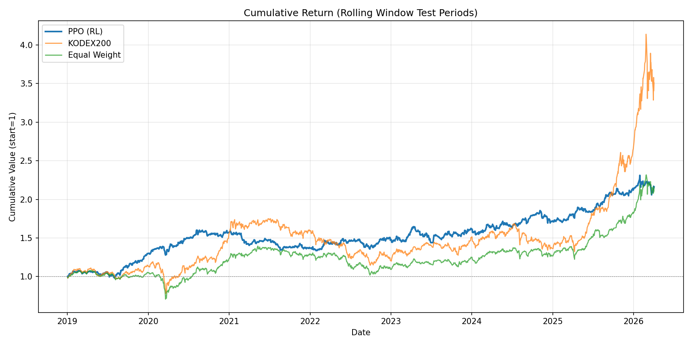
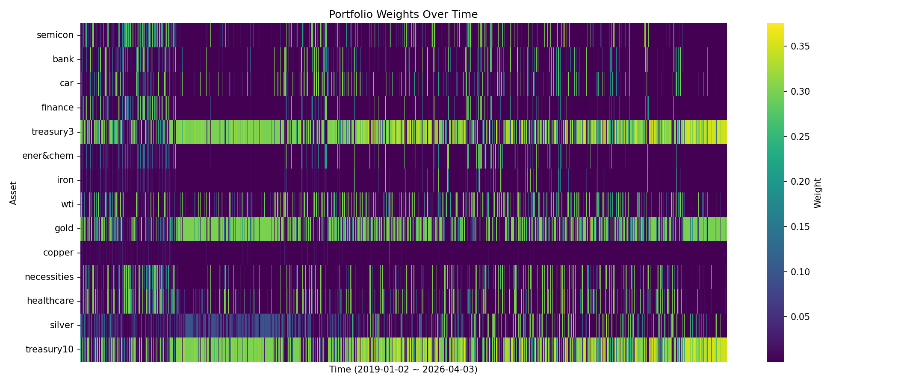
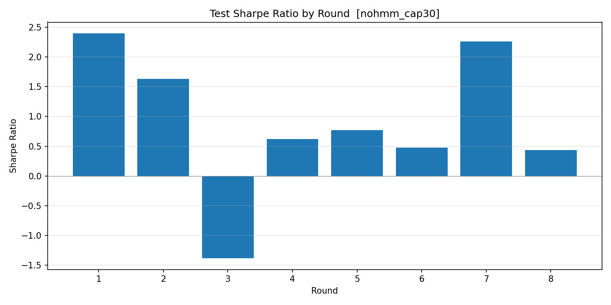
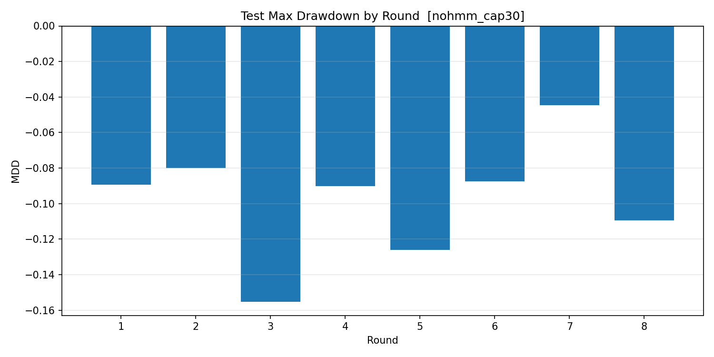
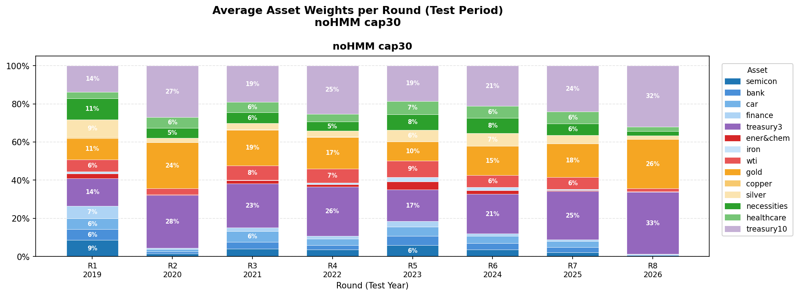
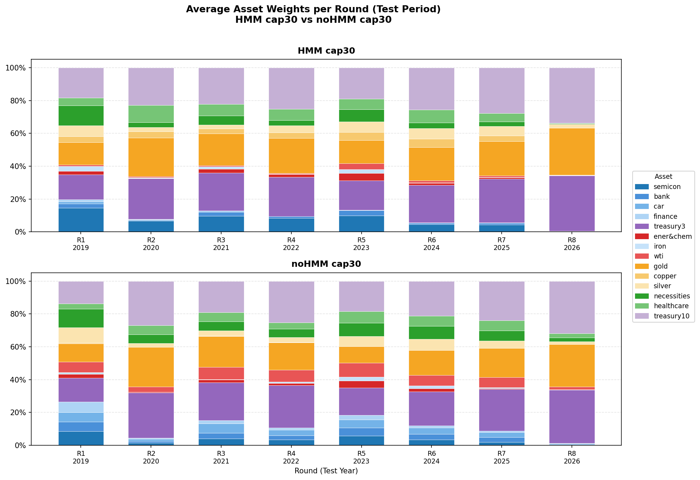
| Round | Best seed | Val DSR | Test DSR sum | Sharpe | CumRet | MDD | Turnover | Test 기간 |
|---|---|---|---|---|---|---|---|---|
| 1 | 0 | 3.36 | -3.64 | 1.07 | +21.17% | -19.53% | 1.32 | 2019 |
| 2 | 0 | 10.32 | 30.65 | 2.33 | +67.44% | -12.66% | 0.94 | 2020 |
| 3 | 4 | 47.50 | 3.85 | 0.54 | +8.72% | -11.41% | 1.01 | 2021 |
| 4 | 1 | 32.01 | 7.66 | -1.27 | -21.15% | -28.06% | 1.31 | 2022 |
| 5 | 2 | 19.72 | 4.62 | 1.78 | +40.05% | -12.40% | 1.51 | 2023 |
| 6 | 0 | 14.00 | 45.10 | 1.57 | +34.06% | -10.95% | 1.43 | 2024 |
| 7 | 0 | 53.96 | 33.42 | 2.09 | +43.27% | -9.30% | 1.33 | 2025 |
| 8 | 4 | 48.10 | -0.88 | -0.05 | -0.52% | -21.04% | 1.40 | 2026 (~04) |
| Round | Best seed | Val DSR | Test DSR sum | Sharpe | CumRet | MDD | Turnover | Test 기간 |
|---|---|---|---|---|---|---|---|---|
| 1 | 0 | 0.11 | 30.44 | 4.07 | +48.55% | -7.85% | 1.11 | 2019 |
| 2 | 0 | 44.14 | 16.77 | 1.44 | +20.57% | -8.66% | 0.68 | 2020 |
| 3 | 0 | 21.46 | -2.05 | -0.47 | -4.53% | -12.03% | 0.84 | 2021 |
| 4 | 0 | 22.74 | 2.38 | -1.25 | -13.62% | -17.96% | 0.82 | 2022 |
| 5 | 0 | 9.16 | 1.64 | 1.54 | +21.04% | -7.89% | 1.29 | 2023 |
| 6 | 0 | 6.97 | 33.16 | 0.78 | +7.50% | -5.70% | 0.87 | 2024 |
| 7 | 0 | 43.79 | 12.34 | 3.27 | +32.22% | -3.63% | 0.74 | 2025 |
| 8 | 0 | 26.63 | -17.23 | -0.09 | -0.36% | -9.25% | 0.12 | 2026 (~04) |
| Round | Best seed | Val DSR | Test DSR sum | Sharpe | CumRet | MDD | Turnover | Test 기간 |
|---|---|---|---|---|---|---|---|---|
| 1 | 0 | -1.24 | 12.33 | 2.39 | +29.89% | -8.93% | 1.20 | 2019 |
| 2 | 0 | 22.40 | -3.81 | 1.63 | +20.78% | -8.00% | 0.49 | 2020 |
| 3 | 0 | 18.76 | -14.14 | -1.38 | -12.75% | -15.52% | 0.90 | 2021 |
| 4 | 0 | -8.19 | 12.98 | 0.62 | +7.55% | -9.01% | 0.90 | 2022 |
| 5 | 0 | 14.66 | 5.86 | 0.77 | +10.36% | -12.60% | 1.21 | 2023 |
| 6 | 0 | 16.36 | 24.70 | 0.48 | +6.01% | -8.74% | 1.11 | 2024 |
| 7 | 0 | 26.80 | 23.81 | 2.26 | +23.10% | -4.45% | 0.88 | 2025 |
| 8 | 0 | 28.27 | -19.84 | 0.43 | +1.98% | -10.94% | 0.33 | 2026 (~04) |